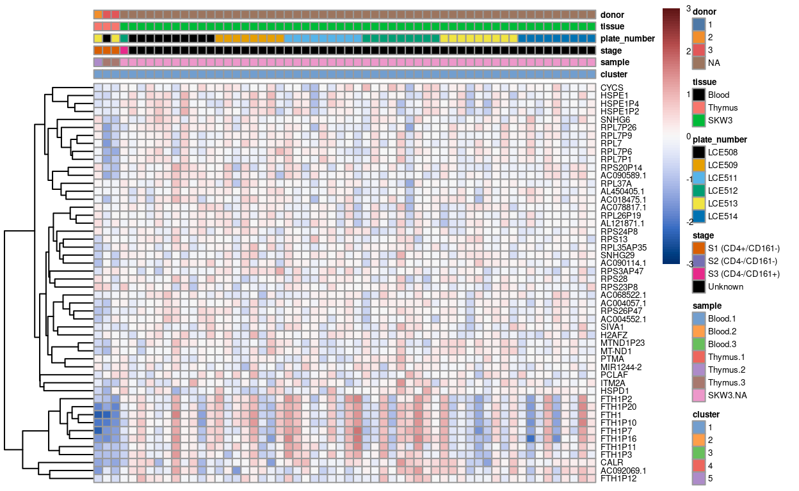

Show code
library(SingleCellExperiment)
library(here)
library(scater)
library(scran)
library(ggplot2)
library(cowplot)
library(edgeR)
library(Glimma)
library(BiocParallel)
library(patchwork)
library(pheatmap)
library(janitor)
source(here("code", "helper_functions.R"))
# NOTE: Using multiple cores seizes up my laptop. Can use more on unix box.
options("mc.cores" = ifelse(Sys.info()[["nodename"]] == "PC1331", 2L, 8L))
register(MulticoreParam(workers = getOption("mc.cores")))
knitr::opts_chunk$set(fig.path = "C094_Pellicci.cell_selection_files/")
Motivation
scRNA-seq datasets may include cells that are not relevant to the study, even after the initial quality control, which we don’t want to include in downstream analyses. In this section aim to filter out these ‘unwanted’ cells and retain only the ‘biologically relevant’ cells. Examples of unwanted cells include:
- Cells with ‘reasonable’ QC metrics, but that are transcriptomically distinct from the majority of cells in the dataset
- Cells of unwanted cell types, such as those that might sneak through a FACS or magnetic bead enrichment sample preparation
Once we are confident that we have selected the biologically relevant cells, we will perform data integration (if necessary) and a further round of clustering in preparation for downstream analysis.
The removal of unwanted cells is an iterative process where at each step we:
- Identify cluster(s) enriched for unwanted cells. The exact criteria used to define ‘unwanted’ will depend on the type of cells we are trying to identify at each step.
- Perform diagnostic checks to ensure we aren’t discarding biologically relevant cells.
- Remove the unwanted cells.
- Re-process the remaining cells.
- Identify HVGs.
- Perform dimensionality reduction (PCA and UMAP).
- Cluster cells.
Clustering is a critical component of this process, so we discuss it in further detail in the next subsection.
Clustering
Clustering is an unsupervised learning procedure that is used in scRNA-seq data analysis to empirically define groups of cells with similar expression profiles. Its primary purpose is to summarize the data in a digestible format for human interpretation. This allows us to describe population heterogeneity in terms of discrete labels that are easily understood, rather than attempting to comprehend the high-dimensional manifold on which the cells truly reside. Clustering is thus a critical step for extracting biological insights from scRNA-seq data.
Clustering calculations are usually performed using the top PCs to take advantage of data compression and denoising1.
Clusters vs. cell types
It is worth stressing the distinction between clusters and cell types. The former is an empirical construct while the latter is a biological truth (albeit a vaguely defined one). For this reason, questions like “what is the true number of clusters?” are usually meaningless. We can define as many clusters as we like, with whatever algorithm we like - each clustering will represent its own partitioning of the high-dimensional expression space, and is as “real” as any other clustering.
A more relevant question is “how well do the clusters approximate the cell types?” Unfortunately, this is difficult to answer given the context-dependent interpretation of biological truth. Some analysts will be satisfied with resolution of the major cell types; other analysts may want resolution of subtypes; and others still may require resolution of different states (e.g., metabolic activity, stress) within those subtypes. Two clusterings can also be highly inconsistent yet both valid, simply partitioning the cells based on different aspects of biology. Indeed, asking for an unqualified “best” clustering is akin to asking for the best magnification on a microscope without any context.
It is helpful to realize that clustering, like a microscope, is simply a tool to explore the data. We can zoom in and out by changing the resolution of the clustering parameters, and we can experiment with different clustering algorithms to obtain alternative perspectives of the data. This iterative approach is entirely permissible for data exploration, which constitutes the majority of all scRNA-seq data analysis.
Graph-based clustering
We build a shared nearest neighbour graph (Xu and Su 2015) and use the Louvain algorithm to identify clusters. We would build the graph using the principal components.
Preparing the data
We start from the preprocessed SingleCellExperiment object created in ‘Preprocessing the Pellicci gamma-delta T-cell data set’.
Show code
sce <- readRDS(here("data", "SCEs", "C094_Pellicci.single-cell.preprocessed.SCE.rds"))
# Some useful colours
plate_number_colours <- setNames(
unique(sce$colours$plate_number_colours),
unique(names(sce$colours$plate_number_colours)))
plate_number_colours <- plate_number_colours[levels(sce$plate_number)]
tissue_colours <- setNames(
unique(sce$colours$tissue_colours),
unique(names(sce$colours$tissue_colours)))
tissue_colours <- tissue_colours[levels(sce$tissue)]
donor_colours <- setNames(
unique(sce$colours$donor_colours),
unique(names(sce$colours$donor_colours)))
donor_colours <- donor_colours[levels(sce$donor)]
sample_colours <- setNames(
unique(sce$colours$sample_colours),
unique(names(sce$colours$sample_colours)))
sample_colours <- sample_colours[levels(sce$sample)]
stage_colours <- setNames(
unique(sce$colours$stage_colours),
unique(names(sce$colours$stage_colours)))
stage_colours <- stage_colours[levels(sce$stage)]
# Some useful gene sets
mito_set <- rownames(sce)[any(rowData(sce)$ENSEMBL.SEQNAME == "MT")]
ribo_set <- grep("^RP(S|L)", rownames(sce), value = TRUE)
# NOTE: A more curated approach for identifying ribosomal protein genes
# (https://github.com/Bioconductor/OrchestratingSingleCellAnalysis-base/blob/ae201bf26e3e4fa82d9165d8abf4f4dc4b8e5a68/feature-selection.Rmd#L376-L380)
library(msigdbr)
c2_sets <- msigdbr(species = "Homo sapiens", category = "C2")
ribo_set <- union(
ribo_set,
c2_sets[c2_sets$gs_name == "KEGG_RIBOSOME", ]$gene_symbol)
ribo_set <- intersect(ribo_set, rownames(sce))
sex_set <- rownames(sce)[any(rowData(sce)$ENSEMBL.SEQNAME %in% c("X", "Y"))]
pseudogene_set <- rownames(sce)[
any(grepl("pseudogene", rowData(sce)$ENSEMBL.GENEBIOTYPE))]
Initial clustering
Show code
set.seed(4759)
snn_gr <- buildSNNGraph(sce, use.dimred = "PCA")
clusters <- igraph::cluster_louvain(snn_gr)
sce$cluster <- factor(clusters$membership)
cluster_colours <- setNames(
scater:::.get_palette("tableau10medium")[seq_len(nlevels(sce$cluster))],
levels(sce$cluster))
sce$colours$cluster_colours <- cluster_colours[sce$cluster]
There are 5 clusters detected, shown on the UMAP plot Figure 1 and broken down by experimental factors in Figure 2.
Show code
p1 <- ggcells(sce, aes(x = UMAP.1, y = UMAP.2)) +
geom_point(aes(colour = cluster), size = 0.25) +
scale_colour_manual(values = cluster_colours) +
theme_cowplot(font_size = 8) +
xlab("Dimension 1") +
ylab("Dimension 2")
p2 <- ggcells(sce, aes(x = UMAP.1, y = UMAP.2)) +
geom_point(aes(colour = sample), size = 0.25) +
scale_colour_manual(values = sample_colours) +
theme_cowplot(font_size = 8) +
xlab("Dimension 1") +
ylab("Dimension 2")
p3 <- ggcells(sce, aes(x = UMAP.1, y = UMAP.2)) +
geom_point(aes(colour = plate_number), size = 0.25) +
scale_colour_manual(values = plate_number_colours) +
theme_cowplot(font_size = 8) +
xlab("Dimension 1") +
ylab("Dimension 2")
p4 <- ggcells(sce, aes(x = UMAP.1, y = UMAP.2)) +
geom_point(aes(colour = tissue), size = 0.25) +
scale_colour_manual(values = tissue_colours) +
theme_cowplot(font_size = 8) +
xlab("Dimension 1") +
ylab("Dimension 2")
p5 <- ggcells(sce, aes(x = UMAP.1, y = UMAP.2)) +
geom_point(aes(colour = donor), size = 0.25) +
scale_colour_manual(values = donor_colours) +
theme_cowplot(font_size = 8) +
xlab("Dimension 1") +
ylab("Dimension 2")
(p1 | p2) / (p3 | p4) / (p5 | plot_spacer())
Figure 1: UMAP plot, where each point represents a droplet and is coloured according to the legend.
Show code
p1 <- ggcells(sce) +
geom_bar(
aes(x = cluster, fill = sample),
position = position_fill(reverse = TRUE)) +
coord_flip() +
ylab("Frequency") +
scale_fill_manual(values = sample_colours) +
theme_cowplot(font_size = 8)
p2 <- ggcells(sce) +
geom_bar(
aes(x = cluster, fill = stage),
position = position_fill(reverse = TRUE)) +
coord_flip() +
ylab("Frequency") +
scale_fill_manual(values = stage_colours) +
theme_cowplot(font_size = 8)
p3 <- ggcells(sce) +
geom_bar(
aes(x = cluster, fill = plate_number),
position = position_fill(reverse = TRUE)) +
coord_flip() +
ylab("Frequency") +
scale_fill_manual(values = plate_number_colours) +
theme_cowplot(font_size = 8)
p4 <- ggcells(sce) +
geom_bar(
aes(x = cluster, fill = tissue),
position = position_fill(reverse = TRUE)) +
coord_flip() +
ylab("Frequency") +
scale_fill_manual(values = tissue_colours) +
theme_cowplot(font_size = 8)
p5 <- ggcells(sce) +
geom_bar(
aes(x = cluster, fill = donor),
position = position_fill(reverse = TRUE)) +
coord_flip() +
ylab("Frequency") +
scale_fill_manual(values = donor_colours) +
theme_cowplot(font_size = 8)
(p1 | p2) / (p3 | p4) / (p5 | plot_spacer())
Figure 2: Breakdown of clusters by experimental factors.
NOTE for the unmerged data based on these figures:
- the majority of cells in cluster
3and4represent the three types/statuses of cells atS3and can be found in bothBloodandThymussamples - most of the cells in
P6andP7form one single cluster, i.e. cluster2, and they found mostly inThymussample only - cluster
1and5are the only standalone clusters separated from the major group (and they seem to be the two obvious clusters needed to be decided if they should “be kept” or “not to be kept” during cell selection step) - cluster
1is basically the control cell lineSKW3, accompanied with a small amount of cells fromThymus 2andThymus 3 - cluster
5are formed from cells mostly fromBlood 3andThymus 3only, implying it was originated from donor3only somehow - merging or not will be decided based on if the feature above can be preserved or not
Investigation of cluster 5
Cell type estimation
First of all, to get a general idea about the identity of cells contained in the strayed cluster 5, we perform cell annotation at cluster level with SingleR using the most relevant annotation reference to gamma-delta T cells- i.e. Monaco Immune Cell Data (GSE107011) (Monaco et al. 2019).
Figure 3 overlays these cell-type-labels on the UMAP plot and it shows that almost all cells of the bigger group formed by cluster 2, 3, and 4are corresponds to Vd2 gd T cells. Intriguingly, cluster 5 is annotated as Intermediate monocytes, whilst cluster 1 (formed mostly by the SKW3 cell line) is labelled as Plasmablasts.
Show code
pred_cluster_fine <- SingleR(
test = sce,
ref = ref[!grepl("^mt|^Rps|^Rpl", rownames(ref)), ],
labels = labels_fine,
cluster = sce$cluster,
BPPARAM = bpparam())
sce$label_cluster_fine <- factor(pred_cluster_fine$pruned.labels[sce$cluster])
sce$label_cluster_fine_collapsed <- .collapseLabel(
sce$label_cluster_fine,
sce$batch)
sce$label_fine_collapsed_colours <- label_fine_collapsed_colours[
as.character(sce$label_cluster_fine)]
umap_df <- makePerCellDF(sce)
umap_df$label_cluster_fine_collapsed <- sce$label_cluster_fine_collapsed
tabyl(
data.frame(label.fine = sce$label_cluster_fine, cluster = sce$cluster),
cluster,
label.fine) %>%
knitr::kable(
caption = "Cluster-level assignments using the fine labels of the MI reference.")
| cluster | Intermediate monocytes | Plasmablasts | Vd2 gd T cells |
|---|---|---|---|
| 1 | 0 | 58 | 0 |
| 2 | 0 | 0 | 744 |
| 3 | 0 | 0 | 684 |
| 4 | 0 | 0 | 582 |
| 5 | 52 | 0 | 0 |
Show code
p1 <- ggplot(aes(x = UMAP.1, y = UMAP.2), data = umap_df) +
geom_point(
aes(colour = cluster),
alpha = 1,
size = 0.25) +
scale_fill_manual(values = cluster_colours) +
scale_colour_manual(values = cluster_colours) +
theme_cowplot(font_size = 10) +
xlab("Dimension 1") +
ylab("Dimension 2") +
ggtitle("Clusters")
bg <- dplyr::select(umap_df, -label_cluster_fine_collapsed)
p2 <- ggplot(aes(x = UMAP.1, y = UMAP.2), data = umap_df) +
geom_point(data = bg, colour = scales::alpha("grey", 0.5), size = 0.125) +
geom_point(
aes(colour = label_cluster_fine_collapsed),
alpha = 1,
size = 0.25) +
scale_fill_manual(values = label_fine_collapsed_colours) +
scale_colour_manual(values = label_fine_collapsed_colours) +
theme_cowplot(font_size = 10) +
xlab("Dimension 1") +
ylab("Dimension 2") +
facet_wrap(~ label_cluster_fine_collapsed, ncol = 2) +
guides(colour = FALSE) +
ggtitle("'fine' cluster-level label")
p1 + p2 + plot_layout(widths = c(1, 2))

Figure 3: UMAP plot highlighting clusters (left) and ‘fine’ cluster-level labels (right) where each panel highlights droplets from a particular label. Labels with < 1% frequency are grouped together as other.
Diagnostic plots
As a sanity check, we can examine the expression of the marker genes for the relevant cell type labels by plotting a heatmap of their expression in:
- The reference dataset
- Our dataset
The value of (1) is that we can assess if we believe the genes are indeed good markers of the relevant cell type in the reference dataset. The value of (2) is that we can check that these genes are useful markers in our dataset (e.g., that they are reasonably well sampled in our data).
Show code
Here, we specifically select (some of) the most strongly upregulated genes when comparing the Intermediate monocytes to the Vd2 gd T cells (mi.Mono_vs_gdT) and vice-versa (mi.gdT_vs_Mono)
Figure 4 confirms that both the mi.Mono_vs_gdT and mi.gdT_vs_Mono marker genes distinguish these two cell types from one another in the MI reference dataset. However, the mi.gdT_vs_Mono marker genes are also expressed in Plasmablasts samples, highlighting that what are useful marker genes in one comparison are not necessarily in another comparison.
Show code
# NOTE: Have to remove column names from MI to avoid an error.
tmp <- mi
colnames(tmp) <- seq_len(ncol(tmp))
# select only the annotation used in this dataset
tmp <- tmp[,tmp$label.fine==levels(sce$label_cluster_fine)]
# specify a more contrasting colour than default
# TODO: `row_annotation_colors` seems still not able to pass the colours to the plotHeatmap function
markers_colours <- setNames(c("red", "green"), c("mi.Mono_vs_gdT", "mi.gdT_vs_Mono"))
plotHeatmap(
tmp,
features = markers,
colour_columns_by = "label.fine",
center = TRUE,
symmetric = TRUE,
order_columns_by = "label.fine",
cluster_rows = FALSE,
cluster_cols = FALSE,
annotation_row = data.frame(
markers = c(rep("mi.Mono_vs_gdT", 10), rep("mi.gdT_vs_Mono", 10)),
row.names = markers),
color = hcl.colors(101, "Blue-Red 3"),
column_annotation_colors = list(
label.fine = label_fine_collapsed_colours[levels(sce$label_cluster_fine)]),
row_annotation_colors = list(
markers = markers_colours)
)

Figure 4: Heatmap of log-expression values in the MI reference dataset for selected marker genes between the Intermediate monocytes and Vd2 gd T cells labels. Each column is a sample, each row a gene
As you can see, the cells from cluster 5 do give a very strong expression of the intermediate monocyte markers, whilst cells from the other three “gamma-delta T cells”-labelled clusters do not. Although the other three clusters labelled as Vd2 gd T cells do not give a very strong expression of those T cells markers (possibly due to the fact that they are mostly be the “developing” gamma-delta T cells rather than “mature” ones used by the SingleR reference), the cluster 5 cells do give a relatively lower expression for most of the “gamma-delta T cells” markers compared to the other three clusters. Therefore, it suggests the likelihood that the cells in cluster 5 could really be the intermediate monocyte and less likely be the Vd2 gd T cells.
Show code
tmp <- logNormCounts(
sumCountsAcrossCells(
sce,
ids = colData(sce)[, c("cluster", "label_cluster_fine")],
subset_row = markers), exprs_values = 1)
plotHeatmap(
tmp,
features = markers,
colour_columns_by = c("label_cluster_fine", "cluster"),
center = TRUE,
symmetric = TRUE,
order_columns_by = c("label_cluster_fine", "cluster"),
cluster_rows = FALSE,
cluster_cols = FALSE,
annotation_row = data.frame(
markers = c(rep("mi.Mono_vs_gdT", 10), rep("mi.gdT_vs_Mono", 10)),
row.names = markers),
color = hcl.colors(101, "Blue-Red 3"),
column_annotation_colors = list(
cluster = cluster_colours,
label_cluster_fine = label_fine_collapsed_colours[
levels(sce$label_cluster_fine)]))

Figure 5: Heatmap of log-expression values in our dataset at the cell-level for selected marker genes between the Intermediate monocytes and Vd2 gd T cells labels. Each column is a sample, each row a gene. For legibility, only a random 10% of non-Intermediate monocytes cells are shown.
Cluster-specific upregulated genes
Further, we also look for genes that are specifically upregulated in cluster 5 compared to all other clusters, so as to help determine the exact identity of the cluster.
Show code
cluster_markers <- findMarkers(
sce,
groups = sce$cluster,
direction = "up",
pval.type = "all",
row.data = rowData(sce))
Cluster 5 shows to possess handful of genes that are specifically upregulated in that cluster compared to all other clusters (\(FDR < 0.05\)).
The heatmaps below highlight the top-50 genes for cluster 5.
Show code
lab <- "5"
m <- rownames(cluster_markers[[lab]])[cluster_markers[[lab]]$FDR < 0.05]
plotHeatmap(
object = sce,
features = m,
color = hcl.colors(101, "Blue-Red 3"),
center = TRUE,
zlim = c(-3, 3),
order_columns_by = c("cluster", "sample", "stage", "plate_number", "tissue", "donor"),
cluster_rows = TRUE,
fontsize = 5,
column_annotation_colors = list(
cluster = cluster_colours,
sample = sample_colours,
stage = stage_colours,
plate_number = plate_number_colours,
tissue = tissue_colours,
donor = donor_colours,
main = lab)
)
Figure 6: Heatmap of log-expression values in our dataset at the cell-level for cluster-specific marker with FDR <0.05. Each column is a cell, each row a gene. For legibility
Investigation of cluster 1
Cluster-specific upregulated genes
We look for genes that are specifically upregulated in cluster 1 compared to all other clusters.
The heatmaps below highlight the top-50 genes for cluster 1.
Show code
lab <- "1"
lab_markers <- rownames(cluster_markers[[lab]])[cluster_markers[[lab]]$FDR < 0.05]
# NOTE: Select top-50 markers for plotting.
m <- head(lab_markers, 50)
plotHeatmap(
object = sce,
features = m,
color = hcl.colors(101, "Blue-Red 3"),
center = TRUE,
zlim = c(-3, 3),
order_columns_by = c("cluster", "sample", "stage", "plate_number", "tissue", "donor"),
cluster_rows = TRUE,
fontsize = 5,
column_annotation_colors = list(
cluster = cluster_colours,
sample = sample_colours,
stage = stage_colours,
plate_number = plate_number_colours,
tissue = tissue_colours,
donor = donor_colours,
main = lab)
)
Figure 7: Heatmap of log-expression values in our dataset at the cell-level for cluster-specific marker with FDR <0.05. Each column is a cell, each row a gene. For legibility
If we zoom-in to the heatmap above, we may notice that there is a number of likewise expression of cluster 1 specific markers (such as PTMA, MIR1244-2) between the cells from Thymus 2 and Thymus 3 with those of the control cell line. As a result, this may drive the grouping of the cells between thymus cells and the control cell line, which lead to the formation of cluster 1.
Show code
sce1 <- sce[, (sce$cluster == "1") | (sce$cluster == "2" & sce$sample == "Thymus 2" | sce$cluster == "2" & sce$sample == "Thymus 3" )]
lab <- "1"
lab_markers <- rownames(cluster_markers[[lab]])[cluster_markers[[lab]]$FDR < 0.05]
# NOTE: Select top-50 markers for plotting.
m <- head(lab_markers, 50)
plotHeatmap(
object = sce1,
features = m,
color = hcl.colors(101, "Blue-Red 3"),
center = TRUE,
zlim = c(-3, 3),
order_columns_by = c("cluster", "sample", "stage", "plate_number", "tissue", "donor"),
cluster_rows = TRUE,
fontsize = 5,
column_annotation_colors = list(
cluster = cluster_colours,
sample = sample_colours,
stage = stage_colours,
plate_number = plate_number_colours,
tissue = tissue_colours,
donor = donor_colours)
)

CSVs of the gene lists of unique markers for each cluster are available in output/unmerged/cluster_markers.
Show code
dir.create(here("output/unmerged/cluster_markers"), recursive = TRUE)
for (n in names(cluster_markers)) {
message(n)
gzout <- gzfile(
description = file.path(
here("output/unmerged/cluster_markers"),
sprintf("cluster_%02d.csv.gz", as.integer(n))),
open = "wb")
write.csv(
as.data.frame(flattenDF(cluster_markers[[n]])),
gzout,
# NOTE: quote = TRUE needed because some fields contain commas.
quote = TRUE,
row.names = TRUE)
close(gzout)
}
Cell line-guided batch correction
Further, we also investigate the usefulness of the control cell line SKW3 in cluster 1 for purpose of batch correction. The cell line alone, unfortunately, seems not be sufficient to help with the batch correction, but either exacerbated or leave the batch impact unresolved in this scenario (Figure 8).
Show code
tmp <- sce
tmp$batch <- tmp$plate_number
var_fit <- modelGeneVarWithSpikes(tmp, "ERCC", block = tmp$batch)
hvg <- getTopHVGs(var_fit, var.threshold = 0)
hvg <- setdiff(hvg, c(ribo_set, mito_set, pseudogene_set))
library(batchelor)
set.seed(1819)
# manual merge
# NOTE: to reduced var loss of LCE509, which contained different proportion of cells from each sample, I decide to merge LCE509 after the merge of LCE503 + LCE504 (as indicated in the auto-merge)
mnn_out_0 <- fastMNN(
multiBatchNorm(tmp, batch = tmp$batch),
batch = tmp$batch,
cos.norm = FALSE,
d = ncol(reducedDim(tmp, "PCA")),
auto.merge = FALSE,
merge.order = list(list("LCE513", "LCE514", "LCE509"), list("LCE508", "LCE511", "LCE512")),
restrict = list(tmp$tissue == "SKW3"),
subset.row = hvg)
reducedDim(tmp, "corrected") <- reducedDim(mnn_out_0, "corrected")
# generate UMAP
set.seed(11901)
tmp <- runUMAP(tmp, dimred = "corrected", name = "UMAP_corrected")
Show code
umap_df <- makePerCellDF(tmp)
bg <- dplyr::select(umap_df, -plate_number)
plot_grid(
ggplot(aes(x = UMAP.1, y = UMAP.2), data = umap_df) +
geom_point(data = bg, colour = scales::alpha("grey", 0.5), size = 0.125) +
geom_point(aes(colour = plate_number), alpha = 1, size = 0.5) +
scale_fill_manual(values = plate_number_colours, name = "plate_number") +
scale_colour_manual(values = plate_number_colours, name = "plate_number") +
theme_cowplot(font_size = 10) +
xlab("UMAP 1") +
ylab("UMAP 2") +
facet_wrap(~plate_number, ncol = 3) +
guides(colour = guide_legend(override.aes = list(size = 2, alpha = 1))) +
guides(colour = FALSE),
ggplot(aes(x = UMAP_corrected.1, y = UMAP_corrected.2), data = umap_df) +
geom_point(data = bg, colour = scales::alpha("grey", 0.5), size = 0.125) +
geom_point(aes(colour = plate_number), alpha = 1, size = 0.5) +
scale_fill_manual(values = plate_number_colours, name = "plate_number") +
scale_colour_manual(values = plate_number_colours, name = "plate_number") +
theme_cowplot(font_size = 10) +
xlab("UMAP_corrected 1") +
ylab("UMAP_corrected 2") +
facet_wrap(~plate_number, ncol = 3) +
guides(colour = guide_legend(override.aes = list(size = 2, alpha = 1))) +
guides(colour = FALSE),
ncol= 2,
align ="h"
)

Figure 8: UMAP plot of the dataset. Each point represents a cell and each panel highlights cells from a particular plate_number when data is unmerged (left) and merged by manual merge 2 (right).
Notably, the SKW3 cell line also seems to affect the grouping of some of the sample cells (where cells of cell line were grouped with those from the Thymus cells and form a standalone cluster.
NOTE: Taken all of these evidences together, we decide to remove the Cell line proceed the analyses with only the sample cells. Also, after our online discussion with Dan and Stuart on 30 June 2021, we confirmed that cells in cluster 5 are contaminants and should be removed from the the subsequent analyses as well.
Show code
# remove `cell line` and cells from cluster
sce <- sce[, !(sce$tissue=="SKW3")]
sce <- sce[, !(sce$cluster=="5")]
colData(sce) <- droplevels(colData(sce))
We then re-process the sample cells remained in the dataset.
Re-processing
Show code
sce$batch <- sce$plate_number
var_fit <- modelGeneVarWithSpikes(sce, "ERCC", block = sce$batch)
hvg <- getTopHVGs(var_fit, var.threshold = 0)
hvg <- setdiff(hvg, c(ribo_set, mito_set, pseudogene_set))
set.seed(67726)
sce <- denoisePCA(
sce,
var_fit,
subset.row = hvg,
BSPARAM = BiocSingular::IrlbaParam(deferred = TRUE))
set.seed(853)
sce <- runUMAP(sce, dimred = "PCA")
set.seed(4759)
snn_gr <- buildSNNGraph(sce, use.dimred = "PCA")
clusters <- igraph::cluster_louvain(snn_gr)
sce$cluster <- factor(clusters$membership)
cluster_colours <- setNames(
scater:::.get_palette("tableau10medium")[seq_len(nlevels(sce$cluster))],
levels(sce$cluster))
sce$colours$cluster_colours <- cluster_colours[sce$cluster]
There are 4 clusters detected, shown on the UMAP plot Figure 9 and broken down by experimental factors in Figure 10.
Show code
p1 <- ggcells(sce, aes(x = UMAP.1, y = UMAP.2)) +
geom_point(aes(colour = cluster), size = 0.25) +
scale_colour_manual(values = cluster_colours) +
theme_cowplot(font_size = 8) +
xlab("Dimension 1") +
ylab("Dimension 2")
p2 <- ggcells(sce, aes(x = UMAP.1, y = UMAP.2)) +
geom_point(aes(colour = sample), size = 0.25) +
scale_colour_manual(values = sample_colours) +
theme_cowplot(font_size = 8) +
xlab("Dimension 1") +
ylab("Dimension 2")
p3 <- ggcells(sce, aes(x = UMAP.1, y = UMAP.2)) +
geom_point(aes(colour = stage), size = 0.25) +
scale_colour_manual(values = stage_colours) +
theme_cowplot(font_size = 8) +
xlab("Dimension 1") +
ylab("Dimension 2")
p4 <- ggcells(sce, aes(x = UMAP.1, y = UMAP.2)) +
geom_point(aes(colour = plate_number), size = 0.25) +
scale_colour_manual(values = plate_number_colours) +
theme_cowplot(font_size = 8) +
xlab("Dimension 1") +
ylab("Dimension 2")
p5 <- ggcells(sce, aes(x = UMAP.1, y = UMAP.2)) +
geom_point(aes(colour = tissue), size = 0.25) +
scale_colour_manual(values = tissue_colours) +
theme_cowplot(font_size = 8) +
xlab("Dimension 1") +
ylab("Dimension 2")
p6 <- ggcells(sce, aes(x = UMAP.1, y = UMAP.2)) +
geom_point(aes(colour = donor), size = 0.25) +
scale_colour_manual(values = donor_colours) +
theme_cowplot(font_size = 8) +
xlab("Dimension 1") +
ylab("Dimension 2")
(p1 | p2) / (p3 | p4) / (p5 | p6)
Figure 9: UMAP plot, where each point represents a droplet and is coloured according to the legend.
Show code
p1 <- ggcells(sce) +
geom_bar(
aes(x = cluster, fill = sample),
position = position_fill(reverse = TRUE)) +
coord_flip() +
ylab("Frequency") +
scale_fill_manual(values = sample_colours) +
theme_cowplot(font_size = 8)
p2 <- ggcells(sce) +
geom_bar(
aes(x = cluster, fill = stage),
position = position_fill(reverse = TRUE)) +
coord_flip() +
ylab("Frequency") +
scale_fill_manual(values = stage_colours) +
theme_cowplot(font_size = 8)
p3 <- ggcells(sce) +
geom_bar(
aes(x = cluster, fill = plate_number),
position = position_fill(reverse = TRUE)) +
coord_flip() +
ylab("Frequency") +
scale_fill_manual(values = plate_number_colours) +
theme_cowplot(font_size = 8)
p4 <- ggcells(sce) +
geom_bar(
aes(x = cluster, fill = tissue),
position = position_fill(reverse = TRUE)) +
coord_flip() +
ylab("Frequency") +
scale_fill_manual(values = tissue_colours) +
theme_cowplot(font_size = 8)
p5 <- ggcells(sce) +
geom_bar(
aes(x = cluster, fill = donor),
position = position_fill(reverse = TRUE)) +
coord_flip() +
ylab("Frequency") +
scale_fill_manual(values = donor_colours) +
theme_cowplot(font_size = 8)
(p1 | p2) / (p3 | p4) / (p5 | plot_spacer())
Figure 10: Breakdown of clusters by experimental factors.
NOTE for the unmerged data:
- there is one big population, which is subdivided into four clusters (i.e. cluster
1,2,3, and4) - cells in cluster
1,3, and4are mostly inP8, whilst cells in cluster2are mostly be mixture ofP6,P7, andP8 - plate-specific batch effect seems prominent without MNN correction
Data integration
Motivation
Large single-cell RNA sequencing (scRNA-seq) projects usually need to generate data across multiple batches due to logistical constraints. However, the processing of different batches is often subject to uncontrollable differences, e.g., changes in operator, differences in reagent quality. This results in systematic differences in the observed expression in cells from different batches, which we refer to as “batch effects.” Batch effects are problematic as they can be major drivers of heterogeneity in the data, masking the relevant biological differences and complicating interpretation of the results.
Computational correction of these effects is critical for eliminating batch-to-batch variation, allowing data across multiple batches to be combined for common downstream analysis. However, existing methods based on linear models (Ritchie et al. 2015; Leek et al. 2012) assume that the composition of cell populations are either known or the same across batches. To overcome these limitations, bespoke methods have been developed for batch correction of single-cell data (Haghverdi et al. 2018; Butler et al. 2018; Lin et al. 2019) that do not require a priori knowledge about the composition of the population. This allows them to be used in workflows for exploratory analyses of scRNA-seq data where such knowledge is usually unavailable.
We will use the Mutual Nearest Neighbours (MNN) approach of Haghverdi et al. (2018), as implemented in the batchelor package, to perform data integration. The MNN approach does not rely on pre-defined or equal population compositions across batches, only requiring that a subset of the population be shared between batches.
MNN correction
We treat each plate as a batch and also test to manually provide the merge order.
Show code
library(batchelor)
set.seed(1819)
# manual merge
# NOTE: we tried a merge order (list(list("LCE508", "LCE511", "LCE512", "LCE513", "LCE514"), "LCE509")), which led to significant variance loss; to reduced var loss of LCE509, which contained different proportion of cells from each sample, we decide to merge LCE509 after the merge of LCE503 + LCE504 (as indicated in the auto-merge)
mnn_out <- fastMNN(
multiBatchNorm(sce, batch = sce$batch),
batch = sce$batch,
cos.norm = FALSE,
d = ncol(reducedDim(sce, "PCA")),
auto.merge = FALSE,
merge.order = list(list("LCE513", "LCE514", "LCE509"), list("LCE508", "LCE511", "LCE512")),
subset.row = hvg)
One useful diagnostic of the MNN algorithm is the proportion of variance within each batch that is lost during MNN correction2. Large proportions of lost variance (\(>10 \%\)) suggest that correction is removing genuine biological heterogeneity. This would occur due to violations of the assumption of orthogonality between the batch effect and the biological subspace (Haghverdi et al. 2018).
The manual merge order we chosen (Table 2) lead to an acceptable loss of biological variance from the dataset.
Show code
tab <- metadata(mnn_out)$merge.info$lost.var
knitr::kable(
100 * tab,
digits = 1,
caption = "Percentage of estimated biological variation lost within each plate at each step of the merge (manual). Ideally, all these values should be small (e.g., < 5%).")
| LCE508 | LCE509 | LCE511 | LCE512 | LCE513 | LCE514 |
|---|---|---|---|---|---|
| 3.0 | 0.0 | 2.9 | 0.0 | 0.0 | 0.0 |
| 3.0 | 0.0 | 2.5 | 4.3 | 0.0 | 0.0 |
| 0.0 | 0.0 | 0.0 | 0.0 | 2.5 | 2.8 |
| 0.0 | 5.6 | 0.0 | 0.0 | 2.4 | 2.5 |
| 3.7 | 3.9 | 3.6 | 3.5 | 3.4 | 3.3 |
Show code
reducedDim(sce, "corrected") <- reducedDim(mnn_out, "corrected")
# generate UMAP
set.seed(1248)
sce <- runUMAP(sce, dimred = "corrected", name = "UMAP_corrected")
# re-clustering after each MNN correction
set.seed(4759)
snn_gr <- buildSNNGraph(sce, use.dimred = "corrected")
clusters <- igraph::cluster_louvain(snn_gr)
sce$cluster <- factor(clusters$membership)
cluster_colours <- setNames(
scater:::.get_palette("tableau10medium")[seq_len(nlevels(sce$cluster))],
levels(sce$cluster))
sce$colours$cluster_colours <- cluster_colours[sce$cluster]
Figure 11 shows an overview of comparisons between the unmerged and merged data (manual merge) broken down by different experimental factors.
Show code
p1 <- plotReducedDim(sce, "UMAP", colour_by = "plate_number") +
scale_colour_manual(values = plate_number_colours, name = "plate_number")
p2 <- plotReducedDim(sce, "UMAP_corrected", colour_by = "plate_number") +
scale_colour_manual(values = plate_number_colours, name = "plate_number")
p3 <- plotReducedDim(sce, "UMAP", colour_by = "sample") +
scale_colour_manual(values = sample_colours, name = "sample")
p4 <- plotReducedDim(sce, "UMAP_corrected", colour_by = "sample") +
scale_colour_manual(values = sample_colours, name = "sample")
p5 <- plotReducedDim(sce, "UMAP", colour_by = "cluster") +
scale_colour_manual(values = cluster_colours, name = "cluster")
p6 <- plotReducedDim(sce, "UMAP_corrected", colour_by = "cluster") +
scale_colour_manual(values = cluster_colours, name = "cluster")
p7 <- plotReducedDim(sce, "UMAP", colour_by = "stage") +
scale_colour_manual(values = stage_colours, name = "stage")
p8 <- plotReducedDim(sce, "UMAP_corrected", colour_by = "stage") +
scale_colour_manual(values = stage_colours, name = "stage")
p9 <- plotReducedDim(sce, "UMAP", colour_by = "tissue") +
scale_colour_manual(values = tissue_colours, name = "tissue")
p10 <- plotReducedDim(sce, "UMAP_corrected", colour_by = "tissue") +
scale_colour_manual(values = tissue_colours, name = "tissue")
p11 <- plotReducedDim(sce, "UMAP", colour_by = "donor") +
scale_colour_manual(values = donor_colours, name = "donor")
p12 <- plotReducedDim(sce, "UMAP_corrected", colour_by = "donor") +
scale_colour_manual(values = donor_colours, name = "donor")
p1 + p2 + p3 + p4 +
p5 + p6 + p7 + p8 +
p9 + p10 + p11 + p12 +
plot_layout(ncol = 2, guides = "collect")
Figure 11: Comparison between batch-uncorrected data (leftmost column) and -corrected data by auto merge (2nd column) and two different manual merge orders (3rd and rightmost columns, respectively).
To get an insight, here we focus on the uncorrected and the corrected data by the manual merge, then break down the UMAP plot above further by plate_number (Figure 12), stage (Figure 13), and tissue (Figure 14).
From the perspective of correcting the batch effect, the MNN correction can effectively alleviate the plate-specific grouping of cells (Figure 12).
From the perspective of preserving the biological-feature-of-interest, after the batch correction, we can still observe: (i) the “shifting” of the transcriptomic stages of cells P6 to P7, then P8 (Figure 13); (ii) Blood contains cells mostly at P8 only, whilst Thymus contains cells at all three phases, i.e. P6, P7 and P8 (Figure 14).
Show code
umap_df <- makePerCellDF(sce)
bg <- dplyr::select(umap_df, -plate_number)
plot_grid(
ggplot(aes(x = UMAP.1, y = UMAP.2), data = umap_df) +
geom_point(data = bg, colour = scales::alpha("grey", 0.5), size = 0.125) +
geom_point(aes(colour = plate_number), alpha = 1, size = 0.5) +
scale_fill_manual(values = plate_number_colours, name = "plate_number") +
scale_colour_manual(values = plate_number_colours, name = "plate_number") +
theme_cowplot(font_size = 10) +
xlab("UMAP 1") +
ylab("UMAP 2") +
facet_wrap(~plate_number, ncol = 3) +
guides(colour = guide_legend(override.aes = list(size = 2, alpha = 1))) +
guides(colour = FALSE),
ggplot(aes(x = UMAP_corrected.1, y = UMAP_corrected.2), data = umap_df) +
geom_point(data = bg, colour = scales::alpha("grey", 0.5), size = 0.125) +
geom_point(aes(colour = plate_number), alpha = 1, size = 0.5) +
scale_fill_manual(values = plate_number_colours, name = "plate_number") +
scale_colour_manual(values = plate_number_colours, name = "plate_number") +
theme_cowplot(font_size = 10) +
xlab("UMAP 1") +
ylab("UMAP 2") +
facet_wrap(~plate_number, ncol = 3) +
guides(colour = guide_legend(override.aes = list(size = 2, alpha = 1))) +
guides(colour = FALSE),
ncol= 2,
align ="h"
)
Figure 12: UMAP plot of the dataset. Each point represents a cell and each panel highlights cells from a particular plate_number when data is unmerged (left) and merged by manual merge 2 (right).
Show code
umap_df <- makePerCellDF(sce)
bg <- dplyr::select(umap_df, -stage)
plot_grid(
ggplot(aes(x = UMAP.1, y = UMAP.2), data = umap_df) +
geom_point(data = bg, colour = scales::alpha("grey", 0.5), size = 0.125) +
geom_point(aes(colour = stage), alpha = 1, size = 0.5) +
scale_fill_manual(
values = stage_colours,
name = "stage") +
scale_colour_manual(
values = stage_colours,
name = "stage") +
theme_cowplot(font_size = 10) +
xlab("UMAP 1") +
ylab("UMAP 2") +
facet_wrap(~stage, ncol = 3) +
guides(colour = guide_legend(override.aes = list(size = 2, alpha = 1))) +
guides(colour = FALSE),
ggplot(aes(x = UMAP_corrected.1, y = UMAP_corrected.2), data = umap_df) +
geom_point(data = bg, colour = scales::alpha("grey", 0.5), size = 0.125) +
geom_point(aes(colour = stage), alpha = 1, size = 0.5) +
scale_fill_manual(
values = stage_colours,
name = "stage") +
scale_colour_manual(
values = stage_colours,
name = "stage") +
theme_cowplot(font_size = 10) +
xlab("UMAP 1") +
ylab("UMAP 2") +
facet_wrap(~stage, ncol = 3) +
guides(colour = guide_legend(override.aes = list(size = 2, alpha = 1))) +
guides(colour = FALSE),
ncol= 2,
align ="h"
)
Figure 13: UMAP plot of the dataset. Each point represents a cell and each panel highlights cells from a particular stage when data is unmerged (left) and merged by manual merge 2 (right).
Show code
umap_df <- makePerCellDF(sce)
bg <- dplyr::select(umap_df, -tissue)
plot_grid(
ggplot(aes(x = UMAP.1, y = UMAP.2), data = umap_df) +
geom_point(data = bg, colour = scales::alpha("grey", 0.5), size = 0.125) +
geom_point(aes(colour = tissue), alpha = 1, size = 0.5) +
scale_fill_manual(values = tissue_colours, name = "tissue") +
scale_colour_manual(values = tissue_colours, name = "tissue") +
theme_cowplot(font_size = 10) +
xlab("UMAP 1") +
ylab("UMAP 2") +
facet_wrap(~tissue, ncol = 2) +
guides(colour = guide_legend(override.aes = list(size = 2, alpha = 1))) +
guides(colour = FALSE),
ggplot(aes(x = UMAP_corrected.1, y = UMAP_corrected.2), data = umap_df) +
geom_point(data = bg, colour = scales::alpha("grey", 0.5), size = 0.125) +
geom_point(aes(colour = tissue), alpha = 1, size = 0.5) +
scale_fill_manual(values = tissue_colours, name = "tissue") +
scale_colour_manual(values = tissue_colours, name = "tissue") +
theme_cowplot(font_size = 10) +
xlab("UMAP 1") +
ylab("UMAP 2") +
facet_wrap(~tissue, ncol = 2) +
guides(colour = guide_legend(override.aes = list(size = 2, alpha = 1))) +
guides(colour = FALSE),
ncol= 2,
align ="h"
)
Figure 14: UMAP plot of the dataset. Each point represents a cell and each panel highlights cells from a particular tissuewhen data is unmerged (left) and merged by manual merge 2 (right).
Taken altogether, we conclude that the data corrected by the manual merge as the best possible merge order for data integration of this dataset and proceed.
Show code
reducedDim(sce, "corrected") <- reducedDim(mnn_out, "corrected")
Show code
set.seed(1248)
sce <- runUMAP(sce, dimred = "corrected", name = "UMAP_corrected")
set.seed(4759)
snn_gr <- buildSNNGraph(sce, use.dimred = "corrected")
clusters <- igraph::cluster_louvain(snn_gr)
sce$cluster <- factor(clusters$membership)
cluster_colours <- setNames(
scater:::.get_palette("tableau10medium")[seq_len(nlevels(sce$cluster))],
levels(sce$cluster))
sce$cluster_colours <- cluster_colours[sce$cluster]
To sumup, there are 4 clusters detected, shown on the UMAP plot Figure 15 and broken down by experimental factors in Figure 16.
Show code
p1 <- plotReducedDim(sce, "UMAP_corrected", colour_by = "cluster", theme_size = 7, point_size = 0.2) +
scale_colour_manual(values = cluster_colours, name = "cluster")
p2 <- plotReducedDim(sce, "UMAP_corrected", colour_by = "sample", theme_size = 7, point_size = 0.2) +
scale_colour_manual(values = sample_colours, name = "sample")
p3 <- plotReducedDim(sce, "UMAP_corrected", colour_by = "stage", theme_size = 7, point_size = 0.2) +
scale_colour_manual(values = stage_colours, name = "stage")
p4 <- plotReducedDim(sce, "UMAP_corrected", colour_by = "plate_number", theme_size = 7, point_size = 0.2) +
scale_colour_manual(values = plate_number_colours, name = "plate_number")
p5 <- plotReducedDim(sce, "UMAP_corrected", colour_by = "tissue", theme_size = 7, point_size = 0.2) +
scale_colour_manual(values = tissue_colours, name = "tissue")
p6 <- plotReducedDim(sce, "UMAP_corrected", colour_by = "donor", theme_size = 7, point_size = 0.2) +
scale_colour_manual(values = donor_colours, name = "donor")
(p1 | p2) / (p3 | p4) / (p5 | p6)
Figure 15: UMAP plot, where each point represents a cell and is coloured according to the legend.
Show code
p1 <- ggcells(sce) +
geom_bar(
aes(x = cluster, fill = sample),
position = position_fill(reverse = TRUE)) +
coord_flip() +
ylab("Frequency") +
scale_fill_manual(values = sample_colours) +
theme_cowplot(font_size = 8)
p2 <- ggcells(sce) +
geom_bar(
aes(x = cluster, fill = stage),
position = position_fill(reverse = TRUE)) +
coord_flip() +
ylab("Frequency") +
scale_fill_manual(values = stage_colours) +
theme_cowplot(font_size = 8)
p3 <- ggcells(sce) +
geom_bar(
aes(x = cluster, fill = plate_number),
position = position_fill(reverse = TRUE)) +
coord_flip() +
ylab("Frequency") +
scale_fill_manual(values = plate_number_colours) +
theme_cowplot(font_size = 8)
p4 <- ggcells(sce) +
geom_bar(
aes(x = cluster, fill = tissue),
position = position_fill(reverse = TRUE)) +
coord_flip() +
ylab("Frequency") +
scale_fill_manual(values = tissue_colours) +
theme_cowplot(font_size = 8)
p5 <- ggcells(sce) +
geom_bar(
aes(x = cluster, fill = donor),
position = position_fill(reverse = TRUE)) +
coord_flip() +
ylab("Frequency") +
scale_fill_manual(values = donor_colours) +
theme_cowplot(font_size = 8)
(p1 | p2) / (p3 | p4) / (p5 | plot_spacer())
Figure 16: Breakdown of clusters by experimental factors.
Concluding remarks
The processed SingleCellExperiment object is available (see data/SCEs/C094_Pellicci.cells_selected.SCE.rds). This will be used in downstream analyses, e.g., identifying cluster marker genes and refining the cell labels.
Additional information
The following are available on request:
- Full CSV tables of any data presented.
- PDF/PNG files of any static plots.
Session info
Show code
sessioninfo::session_info()
─ Session info ─────────────────────────────────────────────────────
setting value
version R version 4.0.3 (2020-10-10)
os CentOS Linux 7 (Core)
system x86_64, linux-gnu
ui X11
language (EN)
collate en_US.UTF-8
ctype en_US.UTF-8
tz Australia/Melbourne
date 2021-07-06
─ Packages ─────────────────────────────────────────────────────────
! package * version date lib source
P annotate 1.68.0 2020-10-27 [?] Bioconductor
P AnnotationDbi 1.52.0 2020-10-27 [?] Bioconductor
P AnnotationHub 2.22.0 2020-10-27 [?] Bioconductor
P assertthat 0.2.1 2019-03-21 [?] CRAN (R 4.0.0)
P batchelor * 1.6.3 2021-04-16 [?] Bioconductor
P beachmat 2.6.4 2020-12-20 [?] Bioconductor
P beeswarm 0.3.1 2021-03-07 [?] CRAN (R 4.0.3)
P Biobase * 2.50.0 2020-10-27 [?] Bioconductor
P BiocFileCache 1.14.0 2020-10-27 [?] Bioconductor
P BiocGenerics * 0.36.0 2020-10-27 [?] Bioconductor
P BiocManager 1.30.12 2021-03-28 [?] CRAN (R 4.0.3)
P BiocNeighbors 1.8.2 2020-12-07 [?] Bioconductor
P BiocParallel * 1.24.1 2020-11-06 [?] Bioconductor
P BiocSingular 1.6.0 2020-10-27 [?] Bioconductor
P BiocStyle 2.18.1 2020-11-24 [?] Bioconductor
P BiocVersion 3.12.0 2020-04-27 [?] Bioconductor
P bit 4.0.4 2020-08-04 [?] CRAN (R 4.0.0)
P bit64 4.0.5 2020-08-30 [?] CRAN (R 4.0.0)
P bitops 1.0-6 2013-08-17 [?] CRAN (R 4.0.0)
P blob 1.2.1 2020-01-20 [?] CRAN (R 4.0.0)
P bluster 1.0.0 2020-10-27 [?] Bioconductor
P bslib 0.2.4 2021-01-25 [?] CRAN (R 4.0.3)
P cachem 1.0.4 2021-02-13 [?] CRAN (R 4.0.3)
P celldex * 1.0.0 2020-10-29 [?] Bioconductor
P cli 2.4.0 2021-04-05 [?] CRAN (R 4.0.3)
P colorspace 2.0-0 2020-11-11 [?] CRAN (R 4.0.3)
P cowplot * 1.1.1 2020-12-30 [?] CRAN (R 4.0.3)
P crayon 1.4.1 2021-02-08 [?] CRAN (R 4.0.3)
P curl 4.3 2019-12-02 [?] CRAN (R 4.0.0)
P DBI 1.1.1 2021-01-15 [?] CRAN (R 4.0.3)
P dbplyr 2.1.0 2021-02-03 [?] CRAN (R 4.0.3)
P DelayedArray 0.16.3 2021-03-24 [?] Bioconductor
P DelayedMatrixStats 1.12.3 2021-02-03 [?] Bioconductor
P DESeq2 1.30.1 2021-02-19 [?] Bioconductor
P digest 0.6.27 2020-10-24 [?] CRAN (R 4.0.2)
P distill 1.2 2021-01-13 [?] CRAN (R 4.0.3)
P downlit 0.2.1 2020-11-04 [?] CRAN (R 4.0.3)
P dplyr 1.0.5 2021-03-05 [?] CRAN (R 4.0.3)
P dqrng 0.2.1 2019-05-17 [?] CRAN (R 4.0.0)
P edgeR * 3.32.1 2021-01-14 [?] Bioconductor
P ellipsis 0.3.1 2020-05-15 [?] CRAN (R 4.0.0)
P evaluate 0.14 2019-05-28 [?] CRAN (R 4.0.0)
P ExperimentHub 1.16.1 2021-04-16 [?] Bioconductor
P fansi 0.4.2 2021-01-15 [?] CRAN (R 4.0.3)
P farver 2.1.0 2021-02-28 [?] CRAN (R 4.0.3)
P fastmap 1.1.0 2021-01-25 [?] CRAN (R 4.0.3)
P FNN 1.1.3 2019-02-15 [?] CRAN (R 4.0.0)
P genefilter 1.72.1 2021-01-21 [?] Bioconductor
P geneplotter 1.68.0 2020-10-27 [?] Bioconductor
P generics 0.1.0 2020-10-31 [?] CRAN (R 4.0.3)
P GenomeInfoDb * 1.26.4 2021-03-10 [?] Bioconductor
P GenomeInfoDbData 1.2.4 2020-10-20 [?] Bioconductor
P GenomicRanges * 1.42.0 2020-10-27 [?] Bioconductor
P ggbeeswarm 0.6.0 2017-08-07 [?] CRAN (R 4.0.0)
P ggplot2 * 3.3.3 2020-12-30 [?] CRAN (R 4.0.3)
P Glimma * 2.0.0 2020-10-27 [?] Bioconductor
P glue 1.4.2 2020-08-27 [?] CRAN (R 4.0.0)
P gridExtra 2.3 2017-09-09 [?] CRAN (R 4.0.0)
P gtable 0.3.0 2019-03-25 [?] CRAN (R 4.0.0)
P here * 1.0.1 2020-12-13 [?] CRAN (R 4.0.3)
P highr 0.8 2019-03-20 [?] CRAN (R 4.0.0)
P htmltools 0.5.1.1 2021-01-22 [?] CRAN (R 4.0.3)
P htmlwidgets 1.5.3 2020-12-10 [?] CRAN (R 4.0.3)
P httpuv 1.5.5 2021-01-13 [?] CRAN (R 4.0.3)
P httr 1.4.2 2020-07-20 [?] CRAN (R 4.0.0)
P igraph 1.2.6 2020-10-06 [?] CRAN (R 4.0.2)
P interactiveDisplayBase 1.28.0 2020-10-27 [?] Bioconductor
P IRanges * 2.24.1 2020-12-12 [?] Bioconductor
P irlba 2.3.3 2019-02-05 [?] CRAN (R 4.0.0)
P janitor * 2.1.0 2021-01-05 [?] CRAN (R 4.0.3)
P jquerylib 0.1.3 2020-12-17 [?] CRAN (R 4.0.3)
P jsonlite 1.7.2 2020-12-09 [?] CRAN (R 4.0.3)
P knitr 1.31 2021-01-27 [?] CRAN (R 4.0.3)
P labeling 0.4.2 2020-10-20 [?] CRAN (R 4.0.0)
P later 1.1.0.1 2020-06-05 [?] CRAN (R 4.0.0)
P lattice 0.20-41 2020-04-02 [3] CRAN (R 4.0.3)
P lifecycle 1.0.0 2021-02-15 [?] CRAN (R 4.0.3)
P limma * 3.46.0 2020-10-27 [?] Bioconductor
P locfit 1.5-9.4 2020-03-25 [?] CRAN (R 4.0.0)
P lubridate 1.7.10 2021-02-26 [?] CRAN (R 4.0.3)
P magrittr 2.0.1 2020-11-17 [?] CRAN (R 4.0.3)
P Matrix 1.2-18 2019-11-27 [3] CRAN (R 4.0.3)
P MatrixGenerics * 1.2.1 2021-01-30 [?] Bioconductor
P matrixStats * 0.58.0 2021-01-29 [?] CRAN (R 4.0.3)
P memoise 2.0.0 2021-01-26 [?] CRAN (R 4.0.3)
P mime 0.10 2021-02-13 [?] CRAN (R 4.0.3)
P msigdbr * 7.2.1 2020-10-02 [?] CRAN (R 4.0.2)
P munsell 0.5.0 2018-06-12 [?] CRAN (R 4.0.0)
P patchwork * 1.1.1 2020-12-17 [?] CRAN (R 4.0.3)
P pheatmap * 1.0.12 2019-01-04 [?] CRAN (R 4.0.0)
P pillar 1.5.1 2021-03-05 [?] CRAN (R 4.0.3)
P pkgconfig 2.0.3 2019-09-22 [?] CRAN (R 4.0.0)
P Polychrome 1.2.6 2020-11-11 [?] CRAN (R 4.0.3)
P promises 1.2.0.1 2021-02-11 [?] CRAN (R 4.0.3)
P purrr 0.3.4 2020-04-17 [?] CRAN (R 4.0.0)
P R6 2.5.0 2020-10-28 [?] CRAN (R 4.0.2)
P rappdirs 0.3.3 2021-01-31 [?] CRAN (R 4.0.3)
P RColorBrewer 1.1-2 2014-12-07 [?] CRAN (R 4.0.0)
P Rcpp 1.0.6 2021-01-15 [?] CRAN (R 4.0.3)
P RCurl 1.98-1.3 2021-03-16 [?] CRAN (R 4.0.3)
P ResidualMatrix 1.0.0 2020-10-27 [?] Bioconductor
P rlang 0.4.10 2020-12-30 [?] CRAN (R 4.0.3)
P rmarkdown 2.7 2021-02-19 [?] CRAN (R 4.0.3)
P rprojroot 2.0.2 2020-11-15 [?] CRAN (R 4.0.3)
P RSpectra 0.16-0 2019-12-01 [?] CRAN (R 4.0.0)
P RSQLite 2.2.5 2021-03-27 [?] CRAN (R 4.0.3)
P rsvd 1.0.3 2020-02-17 [?] CRAN (R 4.0.0)
P S4Vectors * 0.28.1 2020-12-09 [?] Bioconductor
P sass 0.3.1 2021-01-24 [?] CRAN (R 4.0.3)
P scales 1.1.1 2020-05-11 [?] CRAN (R 4.0.0)
P scater * 1.18.6 2021-02-26 [?] Bioconductor
P scatterplot3d 0.3-41 2018-03-14 [?] CRAN (R 4.0.0)
P scran * 1.18.5 2021-02-04 [?] Bioconductor
P scuttle 1.0.4 2020-12-17 [?] Bioconductor
P sessioninfo 1.1.1 2018-11-05 [?] CRAN (R 4.0.0)
P shiny 1.6.0 2021-01-25 [?] CRAN (R 4.0.3)
P SingleCellExperiment * 1.12.0 2020-10-27 [?] Bioconductor
P SingleR * 1.4.1 2021-02-02 [?] Bioconductor
P snakecase 0.11.0 2019-05-25 [?] CRAN (R 4.0.0)
P sparseMatrixStats 1.2.1 2021-02-02 [?] Bioconductor
P statmod 1.4.35 2020-10-19 [?] CRAN (R 4.0.2)
P stringi 1.5.3 2020-09-09 [?] CRAN (R 4.0.0)
P stringr 1.4.0 2019-02-10 [?] CRAN (R 4.0.0)
P SummarizedExperiment * 1.20.0 2020-10-27 [?] Bioconductor
P survival 3.2-7 2020-09-28 [3] CRAN (R 4.0.3)
P tibble 3.1.0 2021-02-25 [?] CRAN (R 4.0.3)
P tidyr 1.1.3 2021-03-03 [?] CRAN (R 4.0.3)
P tidyselect 1.1.0 2020-05-11 [?] CRAN (R 4.0.0)
P utf8 1.2.1 2021-03-12 [?] CRAN (R 4.0.3)
P uwot 0.1.10 2020-12-15 [?] CRAN (R 4.0.3)
P vctrs 0.3.7 2021-03-29 [?] CRAN (R 4.0.3)
P vipor 0.4.5 2017-03-22 [?] CRAN (R 4.0.0)
P viridis 0.5.1 2018-03-29 [?] CRAN (R 4.0.0)
P viridisLite 0.3.0 2018-02-01 [?] CRAN (R 4.0.0)
P withr 2.4.1 2021-01-26 [?] CRAN (R 4.0.3)
P xfun 0.22 2021-03-11 [?] CRAN (R 4.0.3)
P XML 3.99-0.6 2021-03-16 [?] CRAN (R 4.0.3)
P xtable 1.8-4 2019-04-21 [?] CRAN (R 4.0.0)
P XVector 0.30.0 2020-10-27 [?] Bioconductor
P yaml 2.2.1 2020-02-01 [?] CRAN (R 4.0.0)
P zlibbioc 1.36.0 2020-10-27 [?] Bioconductor
[1] /stornext/Projects/score/Analyses/C094_Pellicci/renv/library/R-4.0/x86_64-pc-linux-gnu
[2] /tmp/RtmpxxXBtS/renv-system-library
[3] /stornext/System/data/apps/R/R-4.0.3/lib64/R/library
P ── Loaded and on-disk path mismatch.